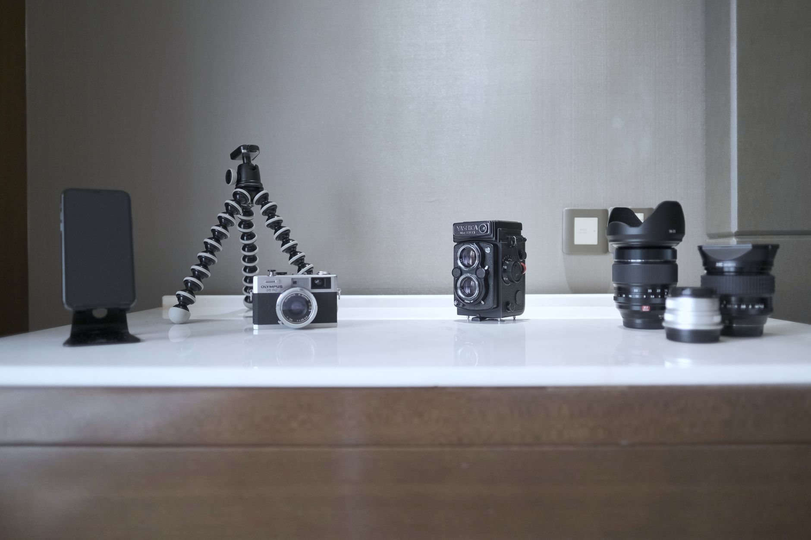

Short-form video (under 90 seconds) has delivered the highest return on investment of any content format for four consecutive years, according to HubSpot's 2024 State of Marketing Report. For a local plumber, contractor, or salon owner, that's not abstract data. It means a 45-second before/after clip filmed on your phone can reach thousands of people in your service area who've never heard of you before.
In 2026, 91% of consumers say they want more video content from businesses they consider buying from, according to Wyzowl's 2024 State of Video Marketing Report. Most local businesses know video works. The problem is they don't know what to post, which platform to start on, or how to film something that doesn't look like a 2009 YouTube tutorial. This guide covers all three. For context on where video fits in your broader social presence, see how local businesses should approach social media in 2026 without wasting time.
Why Short-Form Video Gets Your Business in Front of Local Customers
In 2024, Instagram Reels reached up to 22% more accounts than standard video posts on the same channel, according to Socialinsider's 2024 Instagram Benchmark Report. That gap matters most for local businesses that don't yet have massive follower counts. Short-form video on both TikTok and Instagram operates on a discovery algorithm, not a follower algorithm. A photo post goes to the people already following you. A Reel or TikTok gets tested with a small group first, and if people watch it through, the algorithm pushes it to a wider audience that includes people who've never interacted with your account.
For local businesses, those are people in your service area seeing your work for the first time. The location layer is real. TikTok and Instagram both surface content based on user location signals. A landscaping company in Austin gets discovered by Austin homeowners searching landscaping content, not by random accounts in Seattle. That's the targeted reach that used to require a paid ad budget.
There's also a compounding effect that paid ads don't have. A well-made Reel from six months ago can still drive calls today if the algorithm picks it back up. A photo post disappears from feeds within 24 to 48 hours. Over time, a library of 30 to 50 strong short-form videos works like a passive sales team, finding new customers around the clock.
Five Video Types That Consistently Drive Local Customers
In 2024, short-form video generated 2.5 times more engagement than long-form video for service businesses, according to Sprout Social's 2024 Social Media Content Strategy Report. But not all short-form video converts the same way. These five types perform consistently for local service businesses because they answer questions people already have, build trust quickly, and give viewers a reason to save or share.
1. Before/After transformations. Before/after content earns the highest save rate of any format for service businesses. Viewers save it to show a partner or reference later. A flooring installer, hairdresser, or landscaper who posts consistent before/afters builds a portfolio that keeps working long after the job is done.
2. FAQ answers. Film a 30-to-60-second answer to the question your customers ask every single week. "Do you offer free estimates?" "What's included in a basic cleaning?" "How long does a tile job take?" These videos get shared because they're genuinely useful, and people share useful things.
3. Behind-the-scenes of a workday. A 30-second montage of what your day looks like builds familiarity fast. People buy from businesses they feel like they know. Behind-the-scenes is the fastest way to get there without a production budget.
4. Customer wins. A customer saying one sentence about their experience on camera outperforms any caption you write. Keep it under 30 seconds. Get permission first. One genuine sentence beats a scripted paragraph every time.
5. Quick trade tips. "One thing to check before calling an HVAC tech." "Three signs your gutters need cleaning this fall." Tips that save customers money or headache make them trust you when they do need to spend. This format works especially well for trades that deal with recurring problems.
TikTok vs. Instagram Reels: Where Should Local Businesses Start?
As of 2024, TikTok has 170 million monthly active users in the USA according to TikTok's own Congressional disclosure, and its algorithm sends new creators' content to non-followers by default. Instagram Reels favor accounts with existing engagement history, but they connect directly to your Instagram business profile, booking links, and DMs. Both use the same 1080x1920 vertical video format, which means you can film once and post to both.
If you've never posted video at all: start with Instagram Reels. It integrates with your existing presence and the call-to-action options (book an appointment, send a DM, click the link in bio) convert better for local services with an established audience. If you want a second, fast-growing source of discovery and you're willing to build from scratch: TikTok's reach advantage for brand-new accounts is real and significant.
One practical note: remove the TikTok watermark before cross-posting to Instagram. Instagram's algorithm suppresses watermarked content in Reels distribution. A free tool like SnapTik removes it in seconds. Film once, post to both, and let both algorithms work for you.
What Equipment Do You Actually Need?
You need your phone. Natural window light produces better results than a ring light in a dim room because it's directional and creates natural contrast. The single biggest factor in whether a local business video holds attention is visual clarity in the first two seconds. Not production value. Not equipment. Clarity.
Here's the complete kit that works:
- Your existing phone (iPhone 11 or newer, or any 2022 or later Android with 4K video capability)
- A basic tripod with a phone adapter ($8 to $12 on Amazon)
- A window with indirect natural light positioned in front of you, not behind you
- A clean, recognizable background (your workspace, your branded vehicle, your storefront)
Avoid filming in your car unless it's a branded work vehicle. Avoid cluttered backgrounds that compete with your message. Avoid a plain white wall, which looks like a deposition. Your actual workspace is your best background because it signals legitimacy without you saying a word about it.

Your First Five Videos: A Plan You Can Execute This Week
Most local businesses never post video because they try to plan 30 days of content at once and decide it's too complicated. Five videos this week beats a 30-day calendar that sits unfinished. Here's a starter plan that requires no editing skills and zero scripting beyond knowing your own business.
Video 1 (today): Who you are and what you do. 30 seconds. Stand in front of your workspace, say your name, what you do, what city you serve, and one thing that makes you different. No editing needed. Just record and post.
Video 2 (next day): A before/after from a job you finished this week or last week. Film the "before" before you start and the "after" when you're done. Add a text overlay with your city name and your service type. No voiceover required.
Video 3 (two days later): Answer your most frequently asked question. Start with the answer immediately, no intro. "Yes, we offer free estimates. Here's how it works." Then explain it in 30 to 45 seconds. Done.
Video 4 (four days later): A day-in-the-life montage. Film six clips of five seconds each throughout your day. Any free app (CapCut, InShot) assembles them into a 30-second Reel in minutes. Add a text overlay with your business name and city.
Video 5 (six days later): A customer reaction. After a job, ask one question: "What did you think?" Record their answer. Twenty seconds of genuine feedback beats any marketing copy you'll ever write.
After five posts, look at which one got the most views and make two more like it. That's your content strategy. You don't need a plan. You need data from your own audience. Once you're consistently converting video viewers to booked customers, consider connecting that traffic to an online booking system that captures after-hours leads automatically.
For detailed tracking of what's actually working on your website and social channels, see how to set up free GA4 analytics for your local business.
Frequently Asked Questions
Sources
- HubSpot, State of Marketing 2024, retrieved 2026-06-08, hubspot.com/state-of-marketing
- Wyzowl, State of Video Marketing 2024, retrieved 2026-06-08, wyzowl.com/video-marketing-statistics
- Socialinsider, 2024 Instagram Benchmark Report, retrieved 2026-06-08, socialinsider.io/blog/instagram-benchmarks
- TikTok, Congressional Disclosure on USA Monthly Active Users, 2024, newsroom.tiktok.com
- Sprout Social, 2024 Social Media Content Strategy Report, retrieved 2026-06-08, sproutsocial.com/insights/data